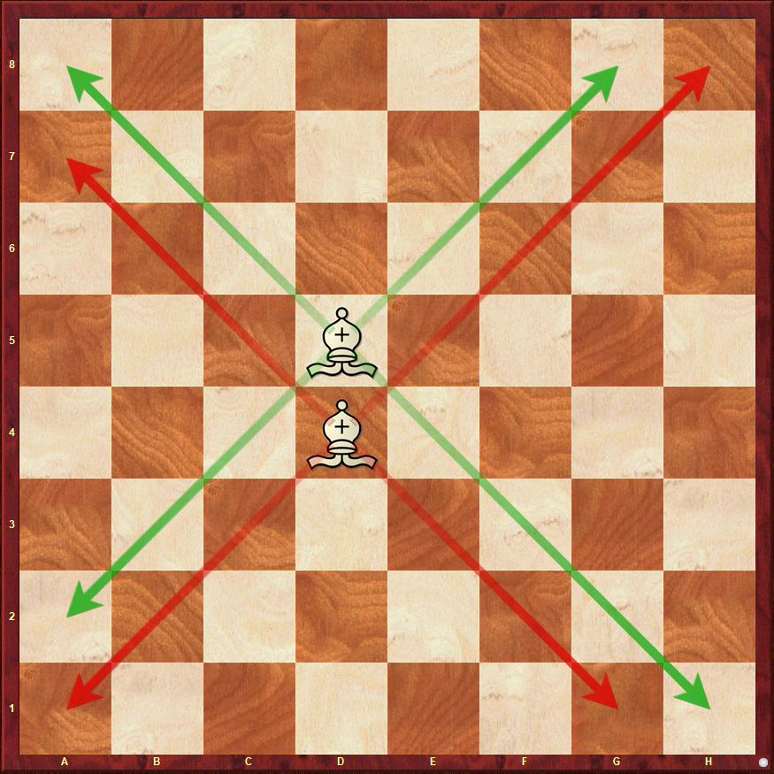

The bishop is the piece with a slit in the top. The bishop stays on the same color as it starts on. If the bishop starts on a light square, it will remain on a light square until it is removed from the board.

Bishops move diagonally as many squares as long as there is no piece in its way. If there is it must either capture it or stop in between. Below is an image of a bishop on a board with its moves labeled. The light squared bishop's squares are marked with the green arrows and the darksquared bishop's moves are labeled with the red arrows.
